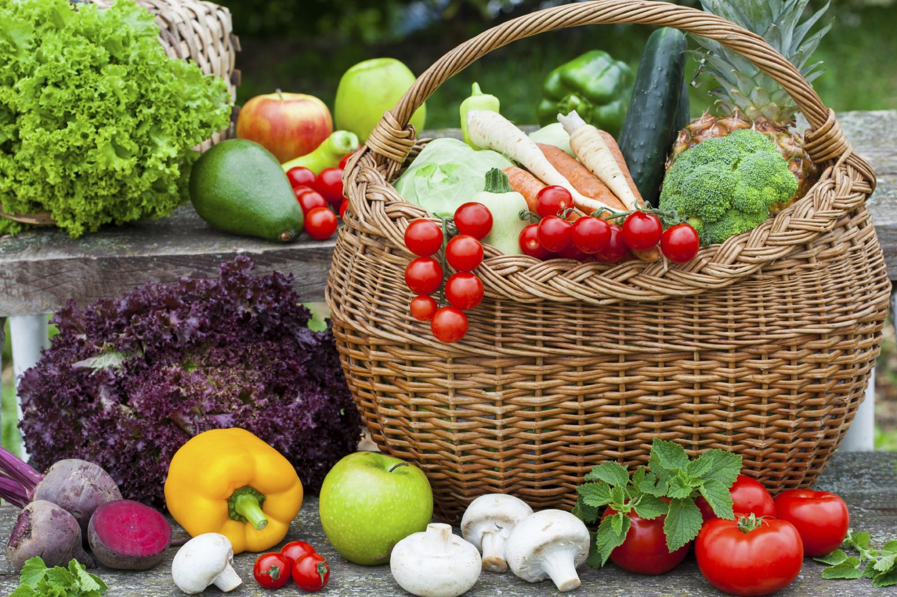

Buy organic veggies, fruits and staples directly from farmers.
As an organic produce digital marketplace, we are committed to sustainability and the health of our planet, we offer a unique process of on boarding farmers who are tested for organic content. We connect these farmers directly with consumers through technology, enabling them to harvest fresh, unadulterated organic produce on demand. We facilitate delivery to your doorstep within 10 hours of harvesting without any storage or processing in between. We work with a range of farmers, from those with very small land holdings to large institutional farms, to move them from chemical-based farming to integrated natural farming.